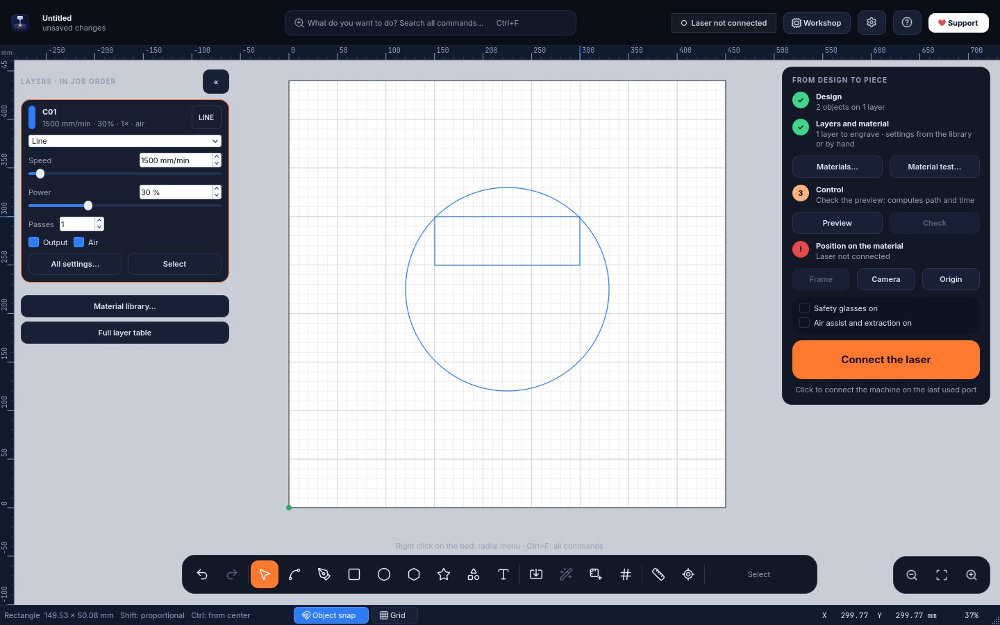
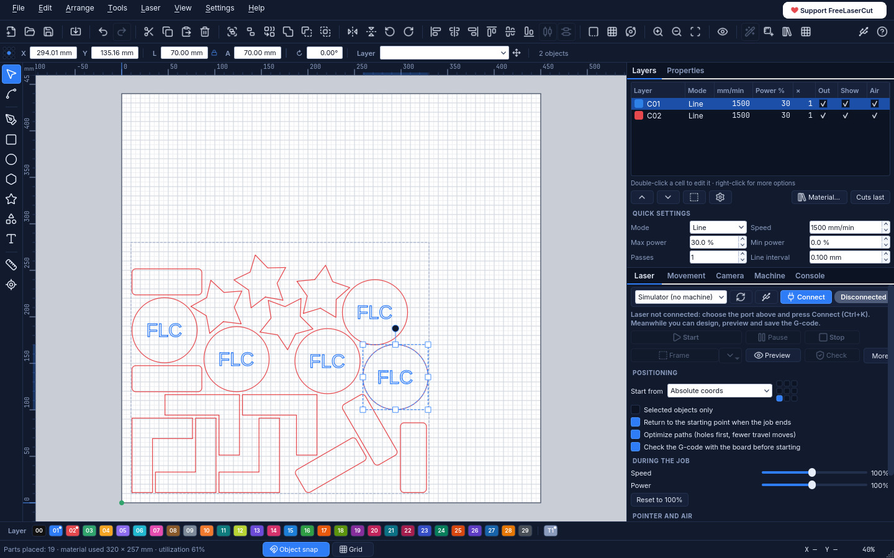
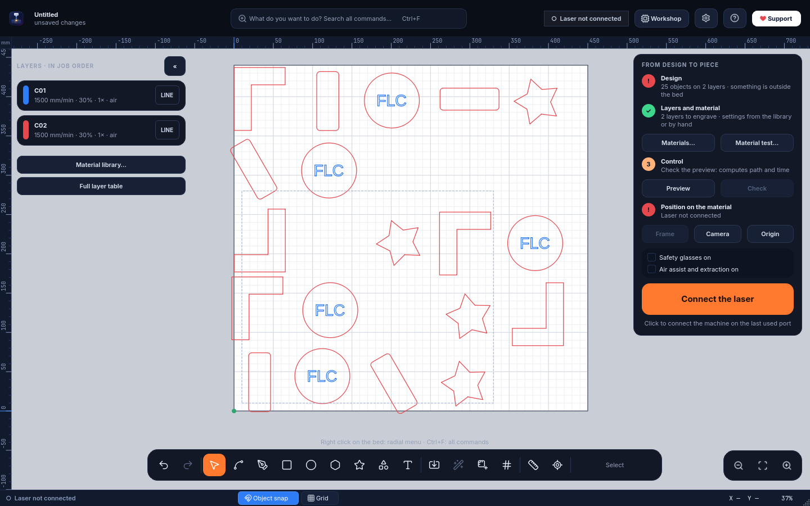
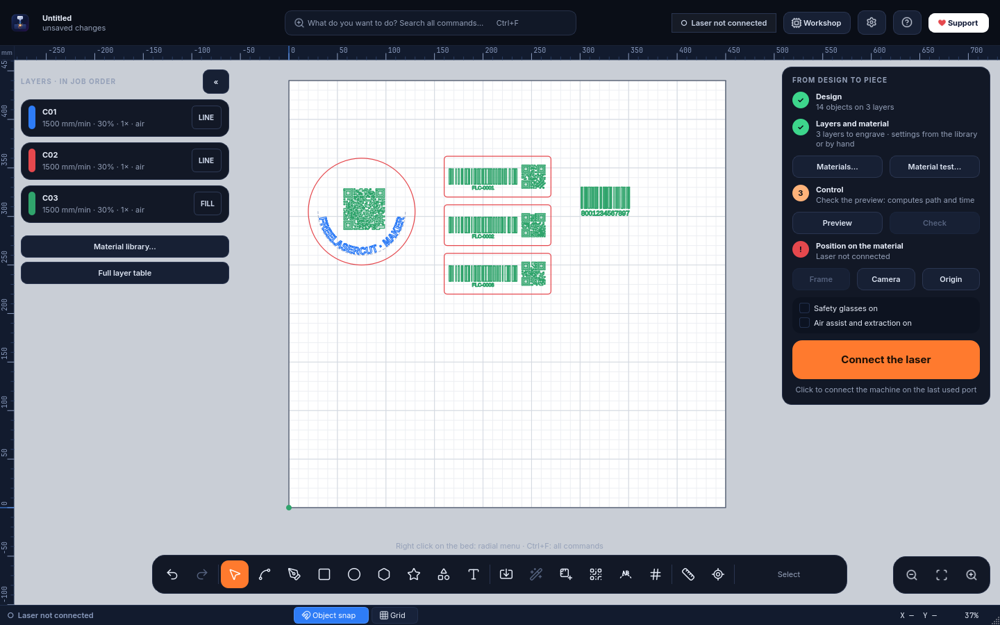

Free, open-source software to design, nest and engrave with your GRBL diode laser. No subscription, no account, no tracking: download it and start engraving.
Software libero e gratuito per disegnare, disporre e incidere con il tuo laser a diodo GRBL. Niente abbonamenti, niente account, niente tracciamenti: lo scarichi e incidi.
GPL-3.0Windows 10 / 11Linux · AppImageGRBL · grblHAL · FluidNCEN · IT · ES · FR · PT
Version · · Python and all libraries included, no administrator rights needed.Versione · · Python e librerie inclusi, non servono permessi da amministratore. From GitHub Releases. Alternative link: Google Drive (click Download; Drive warns that it cannot scan large files for viruses: confirm with Download anyway). Once installed, FreeLaserCut updates itself: Help → Check for updates…Da GitHub Releases. Collegamento alternativo: Google Drive (fai clic su Scarica; Drive avvisa che non può controllare i virus nei file grandi: conferma con Scarica comunque). Una volta installato, FreeLaserCut si aggiorna da solo: Aiuto → Cerca aggiornamenti… SHA-256:
Linux (AppImage, 64-bit, Ubuntu 22.04 / Debian 12 / Fedora 35 or newer) · version · .
It is the same program as the Windows version, released together with it and checked by the same automated tests. Development and testing with a real laser and camera, however, are done on Windows: testing on Linux is done by the people who install it, on their own computer. If something does not work, please report it from Help → Send a report to support: the report already contains the distribution and the technical details, and every report helps fix the problem for everyone.Linux (AppImage, 64 bit, Ubuntu 22.04 / Debian 12 / Fedora 35 o più recenti) · versione · .
È lo stesso programma della versione per Windows, esce insieme a lei e passa le stesse prove automatiche. Lo sviluppo e le prove con il laser e la camera veri però si fanno su Windows: il collaudo su Linux lo fa chi lo installa, sul proprio computer. Se qualcosa non va, segnalalo da Aiuto → Invia un rapporto all'assistenza: il rapporto contiene già la distribuzione e le informazioni tecniche, e ogni segnalazione serve a correggere il problema per tutti. SHA-256:

The Workbench interface: the bed fills the screen, layers are cards, the job is guided step by step.L'interfaccia Banco: il piano occupa lo schermo, gli strati sono schede, il lavoro è guidato passo per passo.
Two interfaces, same commandsDue interfacce, stessi comandi
Work the way you are used toLavora come sei abituato
Coming from other laser software? Choose Classic: menu bar, toolbars, layer table and side panels, exactly where you expect them. Prefer more room for the bed? Choose Workbench. You pick at first start and can switch any time from Settings → Interface.
Arrivi da altri software laser? Scegli la Classica: barra dei menu, barre degli strumenti, tabella dei livelli e pannelli laterali, esattamente dove te li aspetti. Vuoi più spazio per il piano? Scegli il Banco. Si sceglie al primo avvio e si cambia quando vuoi da Impostazioni → Interfaccia.
ClassicClassica

Menus, toolbars, layer table with speed and power, laser panel always visible, colour palette.Menu, barre degli strumenti, tabella dei livelli con velocità e potenza, pannello laser sempre visibile, tavolozza dei colori.
WorkbenchBanco
Full-screen bed, layer cards, guided job panel, command search and radial menu.Piano a tutto schermo, schede degli strati, percorso guidato, ricerca comandi e menu radiale.
FeaturesFunzioni
Everything from the drawing to the finished pieceTutto, dal disegno al pezzo finito
A complete engraving and cutting workflow, designed around the job instead of around menus.
Un flusso completo di incisione e taglio, pensato attorno al lavoro invece che attorno ai menu.
Learns your woodImpara il tuo legno0.16
Take a photo of a material test and FreeLaserCut learns how your own wood responds to the laser, getting more precise with every photo. Then it predicts the result with your wood's real colours, tells you the power for the tone you want and spreads the grays of a photo evenly on the real material, so dark tones no longer clump together. Works with any GRBL laser, no extra hardware.
Fotografa un test materiale e FreeLaserCut impara come risponde il tuo legno al laser, sempre più preciso a ogni foto. Poi prevede il risultato con i colori veri del tuo legno, ti dice la potenza per il tono che vuoi e distribuisce i grigi di una foto in modo uniforme sul materiale vero, così i toni scuri non si impastano più. Con qualsiasi laser GRBL, senza hardware in più.
Work platesPiani di lavoro0.15
Several jobs in one project, as tabs on the edge of the bed: while the laser engraves Plate 1 you already prepare Plate 2, with the objects of the other plates shown in grey as a reference, or all plates side by side in an overview. Same machine and layers, its own undo history for each plate, everything saved in a single file.
Più lavori nello stesso progetto, come linguette sul bordo del piatto: mentre il laser incide il Piano 1 prepari già il Piano 2, con gli oggetti degli altri piani in grigio come riferimento, o tutti i piani affiancati in una vista d'insieme. Stessa macchina e stessi livelli, annulla separato per ogni piano, tutto salvato in un solo file.
3D sculpture from a modelScultura 3D da modello0.14
Open an .stl or .obj model (or use one of the included shapes) and FreeLaserCut slices it into a wooden sculpture: stacked layers to glue, each one marked with where the next goes and numbered, or interlocking profiles that slot together without glue. A 3D preview drawn by your graphics card turns in real time with the mouse, shows the finished piece and animates the assembly; the pieces are laid out on your sheets, marks first and cuts last.
Apri un modello .stl o .obj (o usa una delle forme incluse) e FreeLaserCut lo trasforma in una scultura di legno: strati da incollare, ognuno con inciso dove va il successivo e il suo numero, oppure sagome che si incastrano senza colla. L'anteprima 3D, disegnata dalla scheda grafica e da girare con il mouse in tempo reale, mostra la scultura finita e anima il montaggio; i pezzi vengono sistemati sui tuoi fogli, prima i segni e per ultimi i tagli.
Photo puzzlePuzzle da foto0.13.6
Any photo becomes a jigsaw puzzle: choose size and number of pieces, also heart- or circle-shaped or in a shape you drew. The tabs are different every time, tiny pieces near the edge join their neighbour, and the job engraves the photo first, then cuts the inner sides and the outline last.
Qualsiasi foto diventa un puzzle: scegli misure e numero di pezzi, anche a forma di cuore, di cerchio o di una forma disegnata da te. Gli incastri sono ogni volta diversi, i pezzetti vicino al bordo si uniscono al vicino e il lavoro incide prima la foto, poi taglia i lati interni e per ultimo il contorno.
Photo preparationPrepara foto0.10
Crop, remove the background, boost contrast, add an oval mask and pick a ready-made material. A 4-tile test shows the best dithering on the real material. A photo can also become fill bands and lines that adapt to its tones.
Ritaglia, togli lo sfondo, migliora il contrasto, aggiungi una maschera ovale e scegli un materiale pronto. Una prova su 4 tasselli mostra la retinatura migliore sul materiale vero. La foto può anche diventare fasce di riempimento e linee che si adattano ai suoi toni.
NestingNesting0.9
Arranges your parts on the material with minimum waste, using their real shape, on irregular offcuts and across several sheets. Shared edges can be cut only once.
Sistema i pezzi sul materiale con il minimo spreco, usando la loro sagoma vera, anche sugli avanzi irregolari e su più pannelli. I lati in comune si possono tagliare una volta sola.
QR codes and barcodesQR e codici a barre0.9
QR, Code 128, EAN-13, EAN-8, UPC-A and Code 39 as clean vector shapes, with serial numbers for batches and a negative version for anodized metal and slate.
QR, Code 128, EAN-13, EAN-8, UPC-A e Code 39 come forme vettoriali pulite, con numeri di serie per le serie e versione in negativo per anodizzato e ardesia.
Text on a pathTesto su tracciato0.9
Text that follows any line or outline, still editable: position, alignment, distance and direction.
Testo che segue qualsiasi linea o contorno e resta modificabile: posizione, allineamento, distanza e verso.
RotaryRotativo0.9
Glasses, tumblers, bottles and cylinders with a roller or chuck rotary: design as on a flat sheet, FreeLaserCut scales the Y axis and the speed.
Bicchieri, borracce, bottiglie e cilindri con un rotativo a rulli o a mandrino: disegni come su un foglio, FreeLaserCut scala l'asse Y e la velocità.
Two interfacesDue interfacce
Workbench: full-screen bed, command search (Ctrl+F), radial menu, a cockpit while engraving, and laser/camera panels that move to a second monitor by themselves. Or Classic, with menus and side panels.
Banco: piano a tutto schermo, ricerca di tutti i comandi (Ctrl+F), menu radiale, cabina durante l'incisione, pannelli laser e camera che vanno da soli sul secondo monitor. Oppure Classica, con menu e pannelli laterali.
Your filesI tuoi file
Opens .lbrn2 and .lbrn projects, imports SVG, DXF, PNG, JPG and BMP, exports SVG and G-code.
Apre i progetti .lbrn2 e .lbrn, importa SVG, DXF, PNG, JPG e BMP, esporta SVG e G-code.
Layers that make senseLivelli chiari
Line, fill, offset fill and image modes; speed, power, passes, kerf, tabs, air assist. Images with dithering and halftone.
Modalità linea, riempimento, riempimento offset e immagine; velocità, potenza, passate, kerf, ponticelli, aria. Immagini con dithering e retino.
Material library and testLibreria e test materiali
Ready values for wood, MDF, bamboo, leather, acrylic, cardboard, anodized aluminium, stone and more, plus a material test grid generator to find your own.
Valori pronti per legno, MDF, bambù, pelle, acrilico, cartone, alluminio anodizzato, pietra e altro, più un generatore di griglie di test per trovare i tuoi.
Image tracingVettorizzazione
Turns photos and drawings into vector outlines, or into a single centre line for handwriting and line art.
Trasforma foto e disegni in contorni vettoriali, oppure in una linea centrale per scritte a mano e disegni al tratto.
Variable and curved textTesto variabile e curvo
Dates, serial numbers and lists from CSV for batches of tags; text along an arc; single-line fonts for fast engraving.
Date, numerazioni ed elenchi da CSV per le serie di targhette; testo ad arco; font a linea singola per incisioni veloci.
Camera alignmentCamera sul piano
Calibrated photo of the bed under your design (about ±0.5 mm), to place work exactly on the material.
Foto calibrata del piano sotto il disegno (circa ±0,5 mm), per posizionare il lavoro esattamente sul materiale.
Safe, checked jobsLavori controllati
Preview with path simulation and time, G-code check by the controller, frame, live speed/power overrides, pause, and resume after a power loss.
Anteprima con simulazione del percorso e del tempo, verifica del G-code sulla scheda, contorno, regolazioni dal vivo, pausa e ripresa dopo un'interruzione di corrente.
Machine detectionRiconosce la macchina
Finds the USB port, chip and driver, reads firmware and settings, and builds the right profile for your laser.
Trova porta USB, chip e driver, legge firmware e impostazioni e prepara il profilo giusto per il tuo laser.
Five languagesCinque lingue
English, Italiano, Español, Français and Português. The first start follows the language of your system.
English, Italiano, Español, Français e Português. Al primo avvio segue la lingua del sistema.
AI assistant, optionalAssistente IA, facoltativo
Can be connected to Claude Desktop (MCP) to design and prepare jobs by chat. It never starts the laser on its own.
Si può collegare a Claude Desktop (MCP) per disegnare e preparare i lavori in chat. Non avvia mai il laser da solo.
NestingNesting
Optimize space: less material, fewer offcutsOttimizza lo spazio: meno materiale, meno scarti
Arrange → Optimize space (Alt+N) packs your parts as close as possible to the origin, keeping the spacing you choose.
Disponi → Ottimizza lo spazio (Alt+N) avvicina i pezzi il più possibile all'origine, rispettando la distanza che scegli.
BeforePrima

After — one clickDopo — un clic
Uses each part's true outline, not its bounding box
Usa la sagoma vera di ogni pezzo, non il rettangolo che lo contiene
Rotations: none, 180°, 90°, 45° or 15° (none for wood grain and photos)
Rotazioni: nessuna, 180°, 90°, 45° o 15° (nessuna con venature e foto)
Material: whole bed, a custom rectangle, or any outline on layer T1, even an irregular offcut
Materiale: piano intero, rettangolo su misura o qualsiasi contorno sul livello T1, anche un avanzo irregolare
Engravings stay inside their cut outline; locked shapes are avoided
Le incisioni restano dentro il loro contorno; le forme bloccate vengono evitate
Shows material used and utilization %; one Ctrl+Z undoes it all
Mostra il materiale usato e la resa in %; un Ctrl+Z annulla tutto
Parts that don't fit continue on more identical sheets, each numbered on layer T1
I pezzi che non entrano continuano su altri pannelli uguali, ognuno numerato sul livello T1
Common cut lines: parts are pushed together and shared edges are cut only once
Linee di taglio comuni: i pezzi si accostano e i lati in comune si tagliano una volta sola
Since 0.9Dalla 0.9
Codes, curved text and cylindersCodici, testo curvo e cilindri
A QR code on a coaster, numbered barcodes on a batch of tags, text bent along a curve, a logo wrapped around a tumbler: all made in FreeLaserCut, without other programs.
Un QR su un sottobicchiere, codici a barre numerati su una serie di targhette, una scritta lungo una curva, un logo attorno a una borraccia: tutto dentro FreeLaserCut, senza altri programmi.

QR code and text on a curve on a coaster; three tags with serial numbers (FLC-0001, 0002, 0003) as Code 128 and QR; an EAN-13.QR e testo su curva su un sottobicchiere; tre targhette numerate (FLC-0001, 0002, 0003) con Code 128 e QR; un EAN-13.
Tools → QR code or barcode (Ctrl+Alt+Q): put {n} in the content and every copy of a grid array gets its own number
Strumenti → Codice QR o a barre (Ctrl+Alt+Q): metti {n} nel contenuto e ogni copia di una serie a griglia ha il suo numero
Tools → Text on path (Ctrl+Alt+T): select a text and a line or shape
Strumenti → Testo su tracciato (Ctrl+Alt+T): seleziona un testo e una linea o forma
Laser → Rotary: roller or chuck, with a one-turn test for calibration
Laser → Rotativo: a rulli o a mandrino, con la prova di un giro per la taratura
MachinesMacchine
Works with your diode laserFunziona con il tuo laser a diodo
Pick your model at first start, even before connecting it. When you connect, FreeLaserCut reads the real work area, power scale, speed and buffer from the controller.
Scegli il modello al primo avvio, anche prima di collegarlo. Quando lo colleghi, FreeLaserCut legge dalla scheda area di lavoro, scala di potenza, velocità e buffer reali.
The built-in material library is tuned on the Longer B1 40W; with other lasers start from Laser → Material test and save your own values. Galvo lasers and Ruida (CO₂) controllers are not supported.La libreria materiali inclusa è tarata sul Longer B1 40W; con altri laser parti da Laser → Test materiale e salva i tuoi valori. I laser galvo e i controller Ruida (CO₂) non sono supportati.
Quick guideGuida rapida
From download to the first engravingDal download alla prima incisione
The essentials in nine steps. In the program, press Shift+F1 (or the ? button) and hover any command to read what it does; F1 lists all shortcuts. The complete manual is in the README (Italian). Video tutorials are on the Free Laser Cut YouTube channel.
L'essenziale in nove passi. Nel programma premi Maiusc+F1 (o il pulsante ?) e passa il mouse su un comando per leggere cosa fa; F1 elenca tutte le scorciatoie. Il manuale completo è nel README. I video tutorial sono sul canale YouTube Free Laser Cut.
Prefer learning by doing? The interactive tutorial simulates FreeLaserCut and the laser in your browser: ten short missions in two levels, from connecting the laser to engraving a piece that is already cut, in the Workbench or Classic interface. Nothing to install, nothing is engraved. (Italian for now.)
Preferisci imparare facendo? Il tutorial interattivo simula FreeLaserCut e il laser nel browser: dieci missioni brevi in due livelli, dal collegamento del laser all'incisione su un pezzo già tagliato, nell'interfaccia Banco o Classica. Niente da installare, non si incide niente.
Download FreeLaserCut--Setup.exe and open it. It installs for your user only, with no administrator rights, and adds Start menu and desktop shortcuts.
The installer is not code-signed yet: if Windows shows "Windows protected your PC", choose More info → Run anyway. You can check the file against the SHA-256 shown above.
To remove it: Windows Settings → Apps. Your projects and settings stay in %APPDATA%\FreeLaserCut.
Linux: download FreeLaserCut--x86_64.AppImage, make it executable (chmod +x, or right click → Properties → Allow executing as a program) and open it. On first start it offers to add itself to the applications menu. To use the USB port, add your user to the dialout group once (Laser → Detect machine → USB port permission… explains how); Wi-Fi needs nothing. If it does not start, try --appimage-extract-and-run.
Scarica FreeLaserCut--Setup.exe e aprilo. Si installa solo per il tuo utente, senza permessi da amministratore, con i collegamenti nel menu Start e sul desktop.
L'installatore non è ancora firmato digitalmente: se Windows mostra "PC protetto da Windows" scegli Ulteriori informazioni → Esegui comunque. Puoi confrontare il file con lo SHA-256 indicato sopra.
Per toglierlo: Impostazioni di Windows → App. Progetti e preferenze restano in %APPDATA%\FreeLaserCut.
Linux: scarica FreeLaserCut--x86_64.AppImage, rendilo eseguibile (chmod +x, oppure tasto destro → Proprietà → Consenti l'esecuzione come programma) e aprilo. Al primo avvio propone di aggiungersi al menu delle applicazioni. Per la porta USB aggiungi una volta il tuo utente al gruppo dialout (lo spiega Laser → Riconosci la macchina → Permesso della porta USB…); il Wi-Fi non chiede niente. Se non parte, prova con --appimage-extract-and-run.
2First startPrimo avvio
Read the safety notice, then choose the interface (Workbench or Classic) and your laser model.
You can change interface, language and second-monitor behaviour any time from Settings (the ⚙ button in the Workbench).
Leggi l'avviso di sicurezza, poi scegli l'interfaccia (Banco o Classica) e il modello del tuo laser.
Interfaccia, lingua e uso del secondo monitor si cambiano quando vuoi da Impostazioni (il pulsante ⚙ nel Banco).
3Connect the laserCollega il laser
Close other laser programs that may hold the USB port.
Plug in the USB cable and click the machine status at the top (or Ctrl+K).
If it is not found, open Laser → Detect machine: it shows the USB chip, whether the driver is missing (with the official download), and adapts the profile to your controller.
Run Homing if your laser has limit switches.
Chiudi gli altri programmi per il laser che possono occupare la porta USB.
Collega il cavo USB e fai clic sullo stato della macchina in alto (o Ctrl+K).
Se non la trova, apri Laser → Riconosci la macchina: mostra il chip USB, se manca il driver (con il download ufficiale) e adatta il profilo alla tua scheda.
Esegui l'Homing se il laser ha i finecorsa.
4Design or importDisegna o importa
Tools: V select, N nodes, L lines, R rectangle, E ellipse, P polygon, S star, F shape gallery, T text.
Ctrl+I imports SVG, DXF and images; File → Open also opens .lbrn2 projects.
Type exact sizes in the X / Y / W / H fields: they accept maths and units (120/3, 5cm, +10).
In the Workbench: right-click the bed for the radial menu, Ctrl+F to find any command by name.
Strumenti: V selezione, N nodi, L linee, R rettangolo, E ellisse, P poligono, S stella, F galleria di forme, T testo.
Ctrl+I importa SVG, DXF e immagini; File → Apri apre anche i progetti .lbrn2.
Scrivi le misure esatte nei campi X / Y / L / A: accettano calcoli e unità (120/3, 5cm, +10).
Nel Banco: tasto destro sul piano per il menu radiale, Ctrl+F per trovare qualsiasi comando per nome.
5Layers and materialStrati e materiale
Every colour is a layer. Choose line (cut or score), fill (engrave areas) or image, then speed, power and passes.
Material library (Ctrl+M) applies tested values; Material test engraves a grid to find the right ones for your laser.
Layer T1 is never engraved: use it for guides and for the outline of your material.
Ogni colore è uno strato. Scegli linea (taglio o tracciatura), riempimento (incisione di aree) o immagine, poi velocità, potenza e passate.
La libreria materiali (Ctrl+M) applica valori collaudati; il test materiale incide una griglia per trovare quelli giusti per il tuo laser.
Lo strato T1 non viene mai inciso: usalo per le guide e per il contorno del materiale.
6Optimize spaceOttimizza lo spazio
Optionally draw the outline of your sheet on layer T1, then select it together with the parts (or select nothing to use all parts and the whole bed).
Press Alt+N, set spacing (at least the kerf), edge margin and rotations, and click Arrange.
Not happy? Ctrl+Z and try other options.
Se vuoi, disegna il contorno del pannello sullo strato T1 e selezionalo insieme ai pezzi (oppure non selezionare niente: tutti i pezzi, tutto il piano).
Premi Alt+N, scegli distanza (almeno lo spessore del taglio), margine e rotazioni, poi Disponi.
Non ti convince? Ctrl+Z e prova altre opzioni.
7Check and positionControlla e posiziona
Preview (Alt+P) simulates the path and estimates the time; Check lets the controller verify the whole G-code first.
Frame (Ctrl+Shift+F) traces the job outline with the head; with a camera you can see the design on a photo of the bed.
Choose where the job starts: bed coordinates, current position or user origin.
Anteprima (Alt+P) simula il percorso e stima il tempo; Verifica fa controllare prima tutto il G-code alla scheda.
Contorno (Ctrl+Maiusc+F) fa percorrere alla testa il bordo del lavoro; con la camera vedi il disegno sulla foto del piano.
Scegli da dove parte il lavoro: coordinate del piano, posizione attuale o origine utente.
8EngraveIncidi
In the Workbench tick the two safety checks and hold the start button for a second (in Classic: Ctrl+Enter).
The cockpit shows time left and finish time; adjust speed and power ±10% without stopping. Pause and Stop are always in the same place (Ctrl+Space pauses).
Nel Banco spunta le due conferme di sicurezza e tieni premuto il pulsante di avvio per un secondo (nella Classica: Ctrl+Invio).
La cabina mostra tempo rimanente e ora di fine; regoli velocità e potenza ±10% senza fermarti. Pausa e Stop sono sempre nello stesso posto (Ctrl+Spazio mette in pausa).
!SafetySicurezza
Always wear safety glasses rated for your laser's wavelength (blue diodes: 445–455 nm), including when using the low-power pointer.
Never leave the machine running unattended, keep a fire extinguisher nearby and extract the fumes.
Never engrave or cut PVC, vinyl or other chlorine-based plastics: they release corrosive, toxic gas.
The software is provided as is, without warranty: you are responsible for how you use your laser.
Indossa sempre occhiali protettivi adatti alla lunghezza d'onda del laser (diodi blu: 445–455 nm), anche quando usi il puntino a bassa potenza.
Non lasciare mai la macchina in funzione senza sorveglianza, tieni vicino un estintore e aspira i fumi.
Non incidere né tagliare PVC, vinile o altre plastiche al cloro: liberano gas tossici e corrosivi.
Il software è fornito così com'è, senza garanzia: dell'uso del laser rispondi tu.
RoadmapSviluppi
Where FreeLaserCut can go nextDove può arrivare FreeLaserCut
It is written in Python and Qt, open source and modular: every part below can grow with the community's help.
È scritto in Python e Qt, è open source e modulare: ognuna di queste parti può crescere con l'aiuto della comunità.
Signed installer, Microsoft StoreInstallatore firmato, Microsoft StoreIn progressIn corso
Build from public code and packaging are ready; the signature removes the SmartScreen warning.
Costruzione dal codice pubblico e pacchetto pronti; la firma toglie l'avviso di SmartScreen.
Photo preparation, photo to vectorsPrepara foto, foto in vettoriDone · 0.10Fatto · 0.10
Suggested by the community: photo editing before engraving and fills that adapt to the photo.
Proposto dalla comunità: modifica della foto prima dell'incisione e riempimenti che si adattano alla foto.
QR codes and barcodesQR e codici a barreDone · 0.9Fatto · 0.9
Generated directly on the bed, with variable data for series.
Generati direttamente sul piano, con dati variabili per le serie.
Nesting on several sheetsNesting su più pannelliDone · 0.9Fatto · 0.9
Fill one sheet after another, and share common cut lines between parts.
Riempire un pannello dopo l'altro e condividere le linee di taglio comuni tra pezzi.
Text on a path, rotaryTesto su tracciato, rotativoDone · 0.9Fatto · 0.9
Text that follows any curve, and the rotary attachment for glasses, tumblers and cylinders.
Testo che segue qualsiasi curva e l'accessorio rotativo per bicchieri, borracce e cilindri.
macOS and Linux packagesPacchetti macOS e LinuxPlannedIn programma
It already runs from source on Linux; ready-made packages would bring it to everyone.
Funziona già dal codice sorgente su Linux; dei pacchetti pronti lo porterebbero a tutti.
Job log and costsRegistro lavori e costiPlannedIn programma
History of jobs with time and material used, for small workshops that sell their pieces.
Storico dei lavori con tempo e materiale usato, per i piccoli laboratori che vendono i propri pezzi.
Shared material libraryLibreria materiali condivisaHelp wantedCerco aiuto
Tested settings for more lasers, contributed by the people who own them.
Valori collaudati per altri laser, condivisi da chi li possiede.
More languagesAltre lingueHelp wantedCerco aiuto
Translations are simple JSON files in freelasercut/locale: German, Polish, Dutch… are welcome.
Le traduzioni sono semplici file JSON in freelasercut/locale: tedesco, polacco, olandese… sono benvenuti.
More controllersAltri controllerIdeaIdea
Ruida controllers for CO₂ lasers and galvo fiber lasers would need new drivers: a big but possible step.
I controller Ruida dei laser CO₂ e i laser fibra galvo richiederebbero nuovi driver: un passo grande ma possibile.
Found a bug or have an idea? Open an issue on GitHub. Code contributions are welcome under the GPL-3.0 licence.Hai trovato un errore o hai un'idea? Apri una segnalazione su GitHub. I contributi al codice sono benvenuti con licenza GPL-3.0.
FreeLaserCut is complete and free, and it will stay that way. If it saves you time or money, a voluntary donation helps it keep growing. A ⭐ on GitHub helps too.
FreeLaserCut è completo e gratuito, e lo resterà. Se ti fa risparmiare tempo o denaro, una donazione volontaria lo aiuta a crescere. Anche una ⭐ su GitHub aiuta.